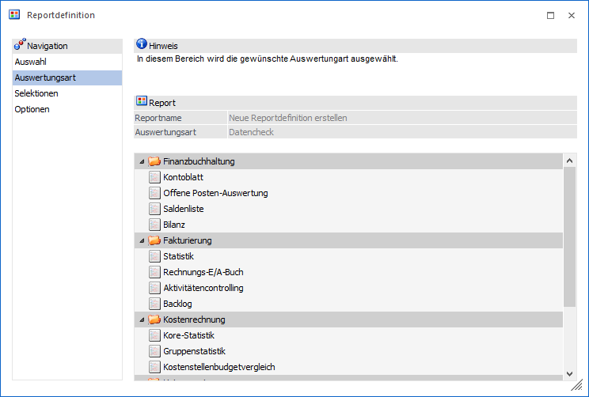
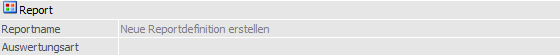
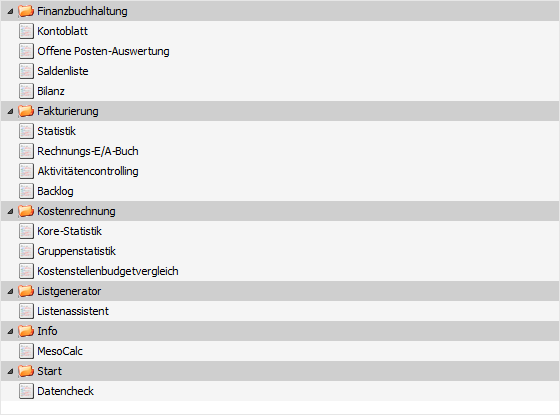

In diesem Bereich kann die Art der Auswertung (d.h. des Reports) angegeben werden.
Hinweis
Wurde im Bereich "Auswahl" eine bereits bestehende Reportdefinition angewählt, so kommt man gleich in den Bereich "Selektion" um dort die Selektion bearbeiten.

Folgende Einstellungen und Informationen stehen in diesem Bereich zur Verfügung:
Report

Ø Reportname
An dieser Stelle wird der Name des ausgewählten Reports angezeigt. Handelt es sich um eine Neuanlage einer Reportdefinition, so wird der Name "Neue Reportdefinition erstellen" ausgegeben.
Ø Auswertungsart
Hier wird die Art der Auswertung des neuen Reports dargestellt, d.h. ob es sich um eine Applikationsauswertung (z.B. Backlog), eine Listauswertung, eine MesoCalc-Ausgabe, den Datencheck oder einen Hintergrundprozess handelt.
Tabelle "Auswertungsart"

Aus der Tabelle kann die Auswertungsart definiert werden. Die spezifischen Einstellungen für die gewählte Auswertung erfolgt im nächsten Bereich (Selektion).